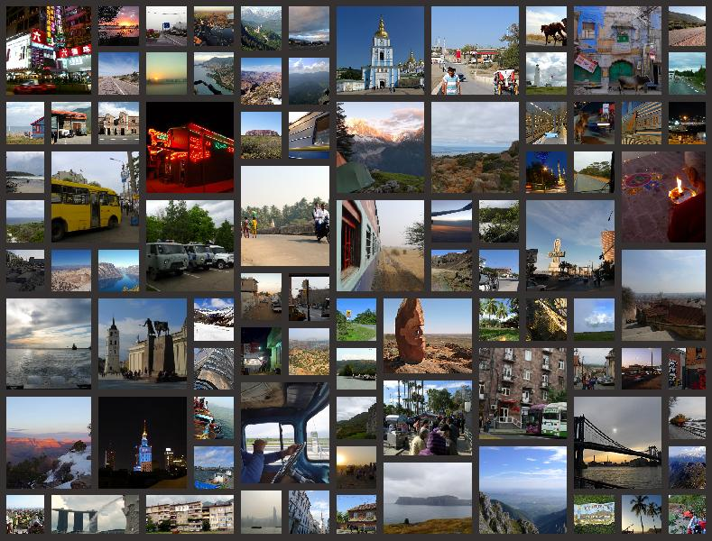

Over the years, I have had the pleasure of exploring many different places on this great world of ours. On some occasions I documented trips through blog posts, and more recently also through videos. The blogs are archived and available below this collage of photographic memories, the videos on the videos page.
